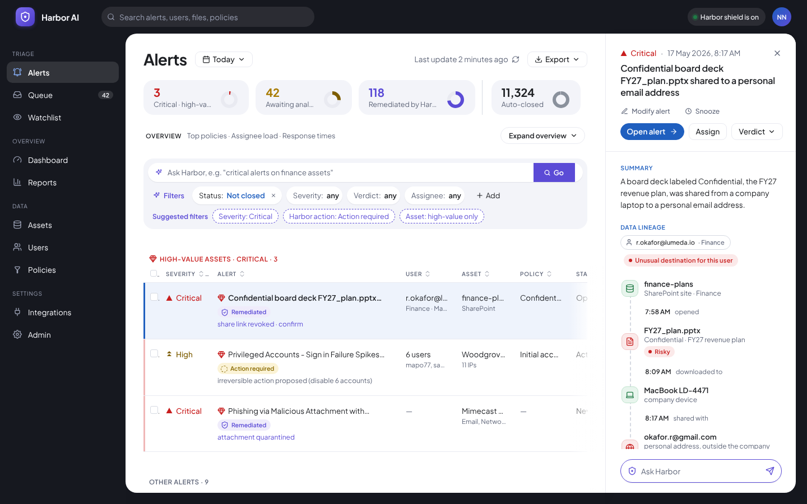
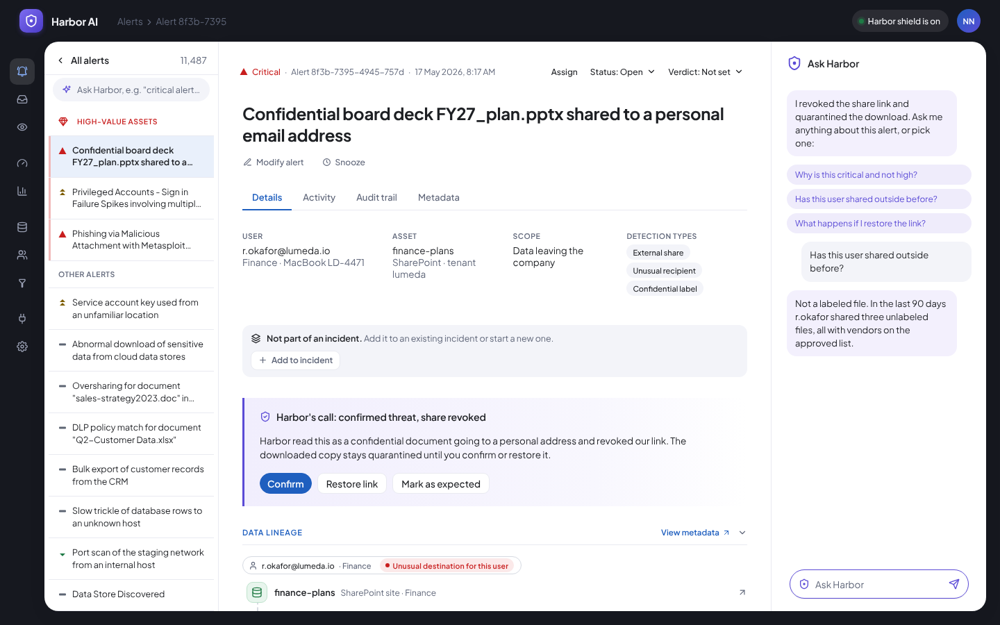
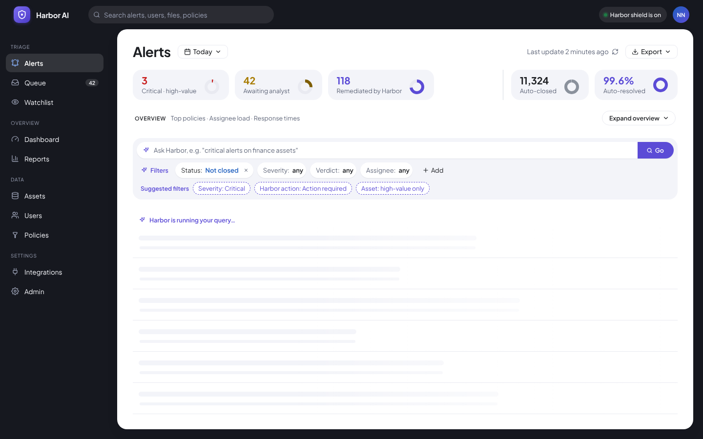
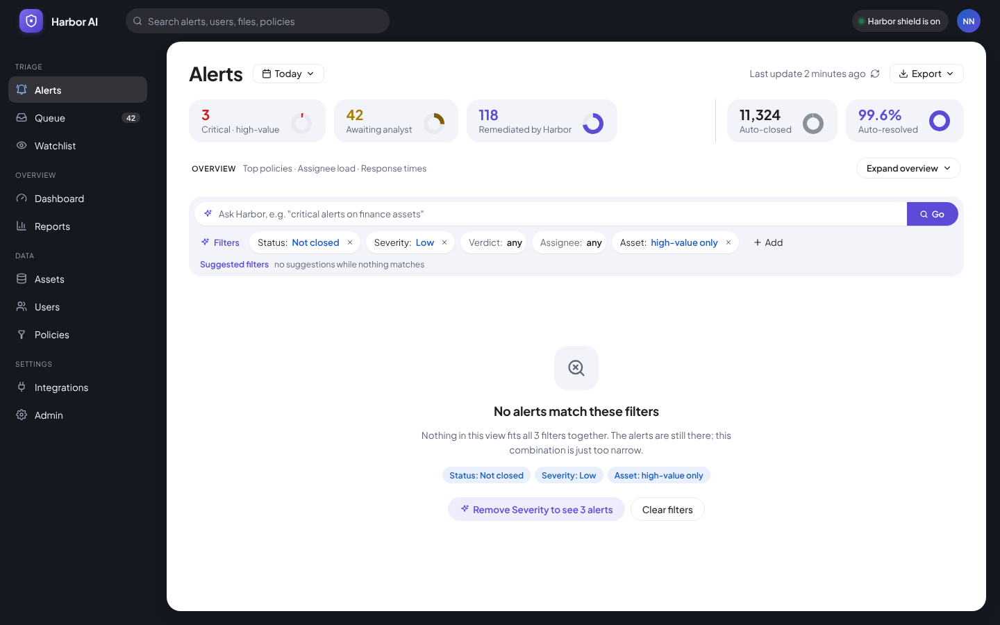
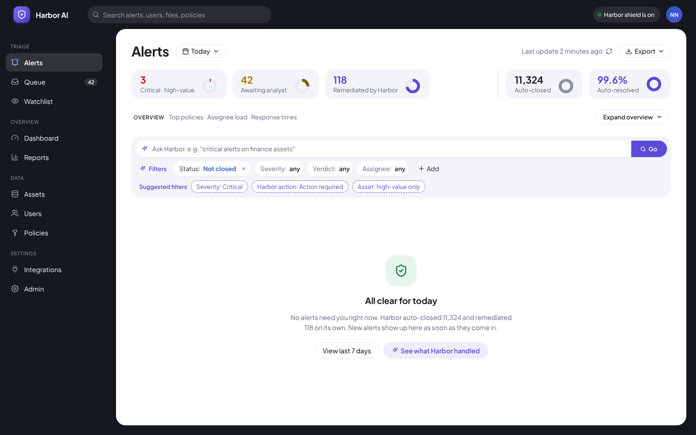
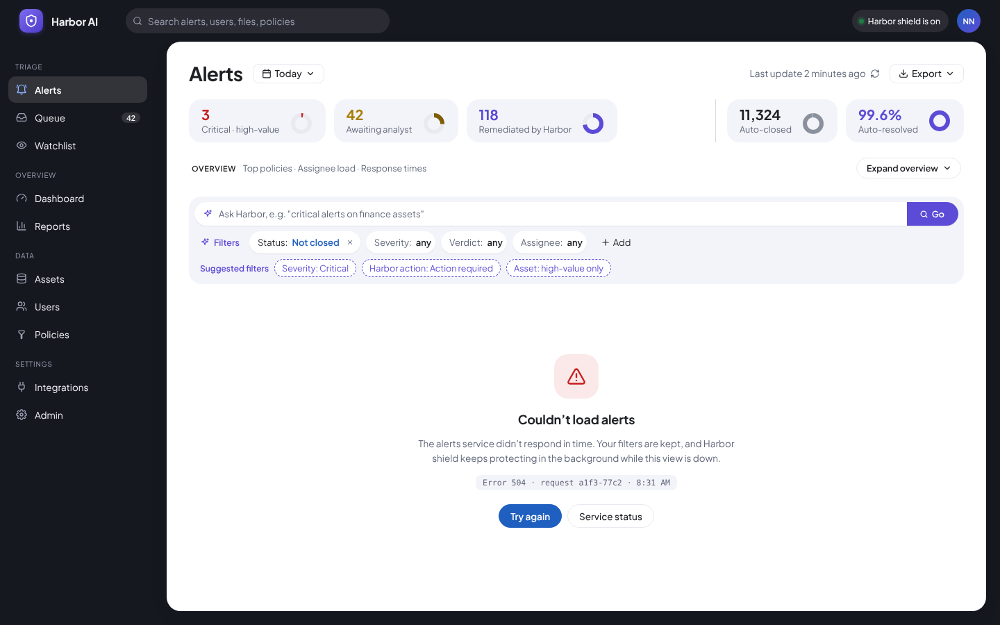

The final screens: simple, with color only where it matters
The top bar and side menu are dark, and the area where you work is light. Purple is used only for Harbor's own buttons. Green, red and yellow always mean something, and each one also comes with a shape and a word.
Figma linksAnyone with the link can view. The component library, and the Figma screens in the order this walkthrough follows.
Alerts list. Four counts, the overview row, Ask Harbor and Filters, then the list with high-value assets first.

Alert panel. Summary, Data lineage and Harbor's call beside the list, with Modify alert, Snooze and Open alert under the title.

Alert details. The alert list as a rail, the Details, Activity, Audit trail and Metadata tabs, Harbor's call, and the Ask Harbor chat.
States
The four states of the alerts list, from the same prototype.

Loading. Harbor says it is running the query, over row skeletons.

No results for filters. The filters are shown, with a one-click way to remove one or clear all.

All clear. Says so plainly, with what Harbor handled on its own.

Couldn't load alerts. Filters are kept, with Try again and Service status.
Visual language and components
Purple for HarborOnly Harbor's own actions are purple. Green, red and yellow only carry meaning. Neutral data uses blue.
Dark frame, light contentThe top bar and navigation are dark. The list, panel and details are light.
Repeated componentsChips, menus, tiles and panels repeat across the three screens.
Responsiveness: 1440 as the base, and what collapses
1440
Base
1280
The panel sits beside the list. The table scrolls sideways, with a fade on the edge that has more
1024
Filters sit behind one button. In the details, Ask Harbor slides over
768
The panel covers the full width. The details show an All alerts button
What never collapses: the alert title and its description. When space runs out, the table scrolls sideways instead of dropping them.
Accessibility, checkable rather than assertable
4.5:1Body text contrastWCAG 2.1 AA. Measured on the prototype at 5 widths: every text color passes after 3 darker tones for severity, muted text and the warning number.
3:1Large text and component boundariesWCAG 2.1 AA
Severity never by color aloneEach level has a shape and a word, so the row survives in grayscale. Nightfall's glyph per confidence level is the precedent.
Focus and keyboardA visible focus state on every control. A full keyboard path through the queue. [Not yet checked in the prototype]
Color is never the only signalDetails in the next card: shape and a word carry every status.
Designing for color blindnessCritical tasks
Alerts are critical tasks. A missed Critical alert, or an action that looks safe but is not, has a real cost. So I checked the accessibility guidelines early, with one rule: a color-blind user must not lose any information because of how they see color.
Red-green color blindnessProtanopia (reduced red sensitivity) and deuteranopia (reduced green sensitivity). Red, green, brown and orange start to look alike. This is the type that most directly hits a security product, because red means danger and green means safe.
Blue-yellow color blindnessTritanopia. Blue and green blur together, and yellow and violet are hard to tell apart. It is much rarer, but our accent is blue-purple and our warning level is yellow, so it still matters.
Why the guidelines have to be met
WCAG 2.1 success criterion 1.4.1 (Use of Color) says color cannot be the only way to show information, an action or a state. Criteria 1.4.3 and 1.4.11 set the contrast floor for text (4.5:1) and for icons and component edges (3:1).
A queue is read for hours, by people under time pressure. Every extra moment spent decoding a color is a chance to act on the wrong alert.
A product sold to enterprises has to meet these rules to be bought, not only to be liked.
How the design meets it: shape and a word, so color is a bonus
CriticalSolid triangle, pointing up
HighTwo stacked chevrons
MediumFlat bar
LowSmall triangle, pointing down
Harbor action chipsRemediated has a shield, Action required has a dashed circle, and each chip names its state in words next to the one-line result, such as "share link revoked".
Lineage and riskEach step has its own icon (database, file, laptop). Risk shows as the word "Risky" or "Unusual destination for this user", never only as a red dot or border.
Irreversible actionsA flag icon and the words "This action is irreversible" on the confirmation, with the object named on the button.
How I checked: I ran the prototype through red-weak and green-weak color simulations. Critical and High turn to a similar olive, but the triangle against the chevrons and the words still tell them apart, so no row lost its meaning. I did not run a blue-yellow simulation, and none of this replaces testing with color-blind users. [To add: real user testing]
Interaction detail and microcopy
Every irreversible action names its object on the button, such as "Revoke access for A. Rao", never "Confirm".
Ticking rows shows "N selected" with what Harbor suggests, and a field to tell it what to do in words.